| Title | Director | Year | Genre | |
|---|---|---|---|---|
| Emma | Autumn de Wilde | 2020 | Romance | |
EmmaHANDSOME, CLEVER, AND RICHIn 1800s England, a well-meaning but selfish young woman meddles in the love lives of her friends. |
||||
| Hot Fuzz | Edgar Wright | 2007 | Comedy | |
Hot FuzzBIG COPS. SMALL TOWN. MODERATE VIOLENCEAs a former London constable, Nicholas Angel finds it difficult to adapt to his new assignment in the sleepy British village of Sandford. Not only does he miss the excitement of the big city, but he also has a well-meaning oaf for a partner. However, when a series of grisly accidents rocks Sandford, Angel smells something rotten in the idyllic village. |
||||
| Phantom Thread | Paul Thomas Anderson | 2017 | Drama | |
Phantom ThreadRenowned British dressmaker Reynolds Woodcock comes across Alma, a young, strong-willed woman, who soon becomes a fixture in his life as his muse and lover. |
||||
| Charade | Stanley Donen | 1963 | Comedy | |
|
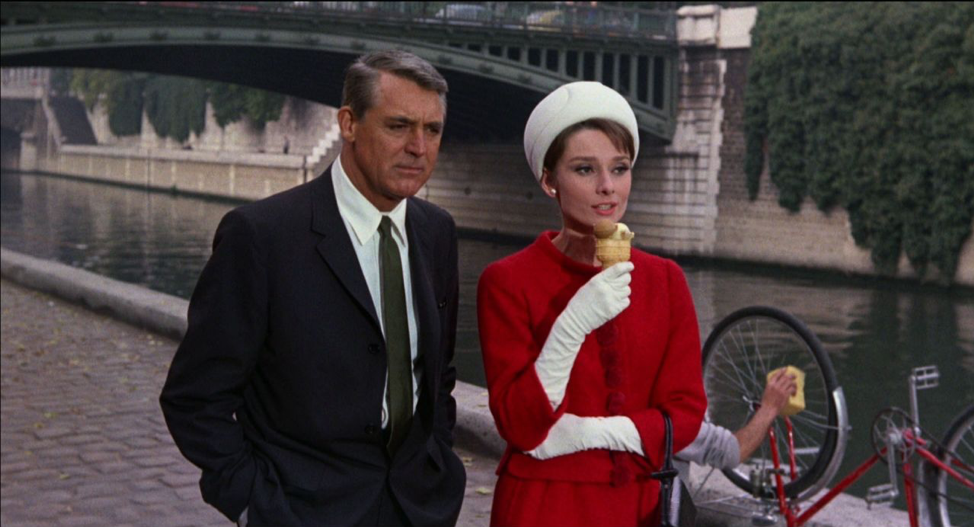
CharadeIS ANYONE REALLY WHO THEY SEEM TO BE?After Regina Lampert falls for the dashing Peter Joshua on a skiing holiday in the French Alps, she discovers upon her return to Paris that her husband has been murdered. Soon, she and Peter are giving chase to three of her late husband’s World War II cronies, Tex, Scobie and Gideon, who are after a quarter of a million dollars the quartet stole while behind enemy lines. But why does Peter keep changing his name? |
||||
| Velvet Goldmine | Todd Haynes | 1998 | Drama | |
|
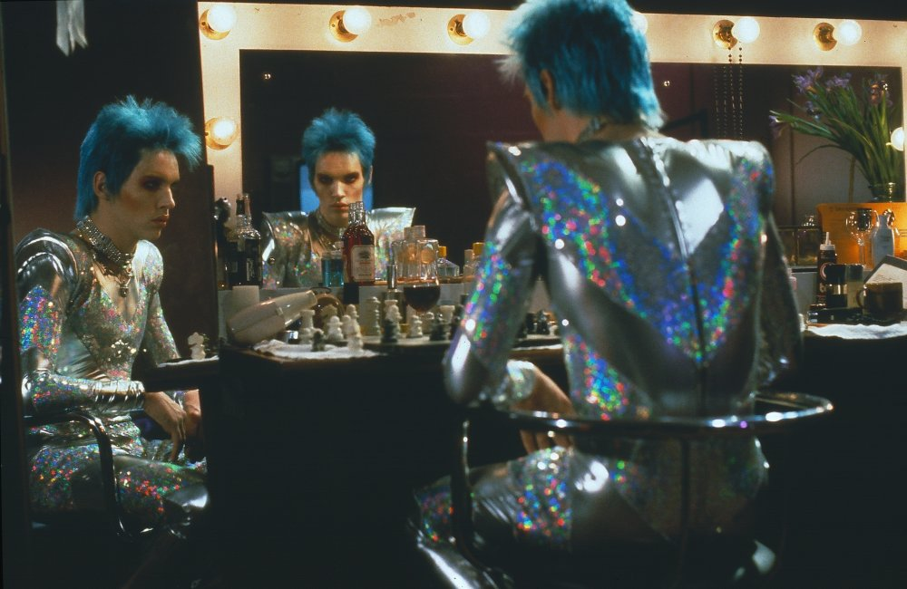
Velvet GoldmineSTYLE MATTERS. EVEN WHEN IT COMES TO MURDERAlmost a decade has elapsed since Bowiesque glam-rock superstar Brian Slade escaped the spotlight of the London scene. Now, investigative journalist Arthur Stuart is on assignment to uncover the truth behind the enigmatic Slade. Stuart, himself forged by the music of the 1970s, explores the larger-than-life stars who were once his idols and what has become of them since the turn of the new decade. |
||||
| Revenge of the Sith | George Lucas | 2005 | Sci-Fi | |
Revenge of the SithTHE SAGA IS COMPLETEThe evil Darth Sidious enacts his final plan for unlimited power and the heroic Jedi Anakin Skywalker must choose a side. |
||||
| Scott Pilgrim vs the World | Edgar Wright | 2010 | Comedy | |
|
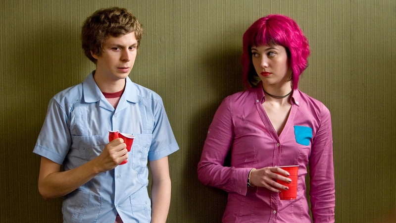
Scott Pilgrim vs the WorldAN EPIC OF EPIC EPICNESSScott Pilgrim is a 23 year old radical Canadian wannabe rockstar who falls in love with an American delivery girl, Ramona Flowers, and must defeat her seven evil exes to be able to date her. |
||||
| Pride & Prejudice | Joe Wright | 2005 | Romance | |
|
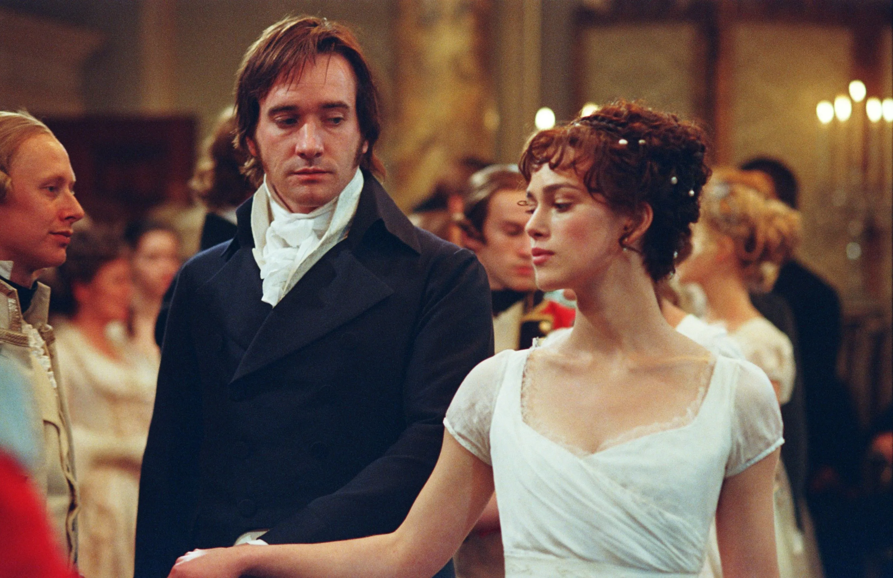
Pride & PrejudiceA ROMANCE AHEAD OF ITS TIMEA story of love and life among the landed English gentry during the Georgian era. Mr. Bennet is a gentleman living in Hertfordshire with his overbearing wife and five daughters, but if he dies their house will be inherited by a distant cousin whom they have never met, so the family's future happiness and security is dependent on the daughters making good marriages. |
||||
| Rocketman | Dexter Fletcher | 2019 | Drama | |
RocketmanBASED ON A TRUE FANTASYThe story of Elton John's life, from his years as a prodigy at the Royal Academy of Music through his influential and enduring musical partnership with Bernie Taupin. |
||||
| The Social Network | David Fincher | 2010 | Drama | |
The Social NetworkYOU DON'T GET TO 500 MILLION FRIENDS WITHOUT MAKING A FEW ENEMIESOn a fall night in 2003, Harvard undergrad and computer programming genius Mark Zuckerberg sits down at his computer and heatedly begins working on a new idea. In a fury of blogging and programming, what begins in his dorm room as a small site among friends soon becomes a global social network and a revolution in communication. A mere six years and 500 million friends later, Mark Zuckerberg is the youngest billionaire in history… but for this entrepreneur, success leads to both personal and legal complications. |
||||
| Coraline | Henry Selick | 2009 | Fantasy | |
|
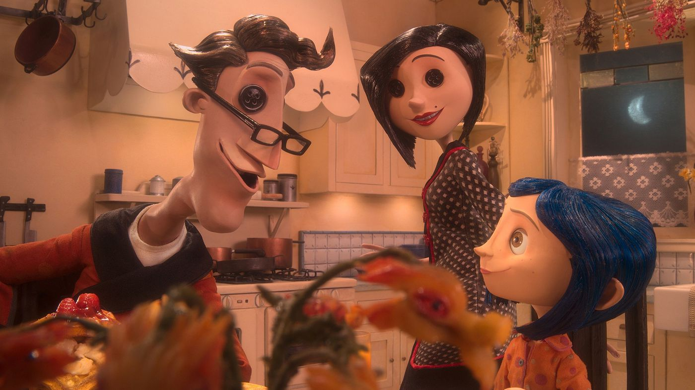
CoralineBE CAREFUL WHAT YOU WISH FORWhen Coraline moves to an old house, she feels bored and neglected by her parents. She finds a hidden door with a bricked up passage. During the night, she crosses the passage and finds a parallel world where everybody has buttons instead of eyes, with caring parents and all her dreams coming true. When the Other Mother invites Coraline to stay in her world forever, the girl refuses and finds that the alternate reality where she is trapped is only a trick to lure her. |
||||
| Tiempo de Valientes | Damián Szifron | 2005 | Comedy | |
Tiempo de ValientesMariano is a psychologist who must fulfill community service after losing a lawsuit by a traffic accident. He is forced to provide therapeutic support to Alfredo, a policeman depressed over his wife cheating on him. Mariano is then accidentally involved in a double homicide investigation being conducted by Alfredo. |
||||
| Spiderman: Into the Spider-Verse | Rodney Rothman, Peter Ramsey, Bob Persichetti | 2018 | Action | |
|
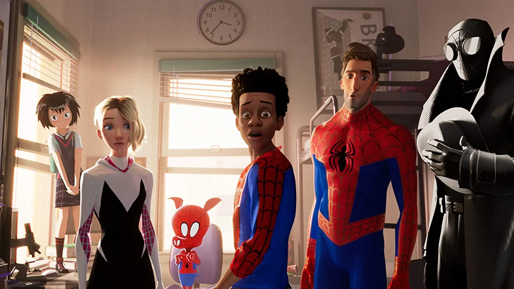
Spiderman: Into the Spider-VerseMORE THAN ONE WEARS THE MASKStruggling to find his place in the world while juggling school and family, Brooklyn teenager Miles Morales is unexpectedly bitten by a radioactive spider and develops unfathomable powers just like the one and only Spider-Man. While wrestling with the implications of his new abilities, Miles discovers a super collider created by the madman Wilson “Kingpin” Fisk, causing others from across the Spider-Verse to be inadvertently transported to his dimension. |
||||
| Pride | Matthew Warchus | 2014 | Drama | |
|
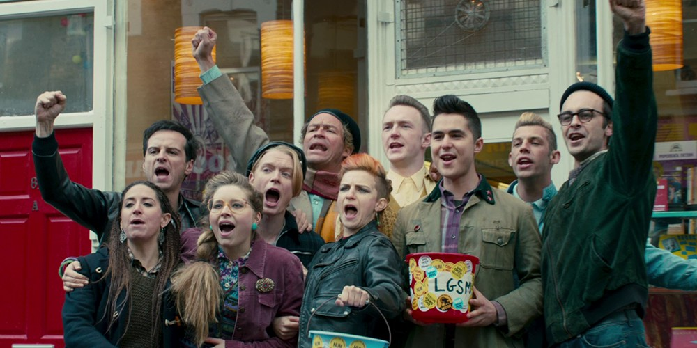
PrideBASED ON THE INSPIRATIONAL TRUE STORYSet in the summer of 1984 Margaret Thatcher is in power and the National Union of Mineworkers (NUM) is on strike. At the Gay Pride March in London, a group of gay and lesbian activists decides to raise money to support the families of the striking miners. But there is a problem. The Union seems embarrassed to receive their support. |
||||
| Jojo Rabbit | Taika Waititi | 2019 | Drama/Comedy | |

Jojo RabbitAN ANTI-HATE SATIREA World War II satire that follows a lonely German boy whose world view is turned upside down when he discovers his single mother is hiding a young Jewish girl in their attic. Aided only by his idiotic imaginary friend, Adolf Hitler, Jojo must confront his blind nationalism. |
||||
| What We Do in the Shadows | Taika Waititi, Jemaine Clement | 2014 | Comedy | |
|
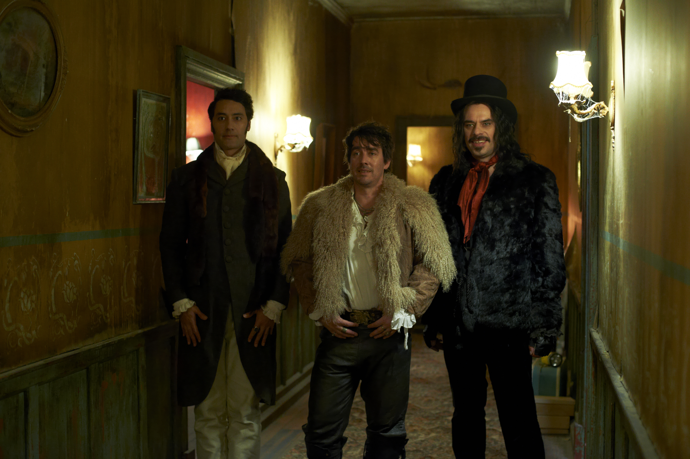
What We Do in the ShadowsSOME INTERVIEWS WITH SOME VAMPIRESVampire housemates try to cope with the complexities of modern life and show a newly turned hipster some of the perks of being undead. |
||||
| The World's End | Edgar Wright | 2013 | Comedy | |
The World's EndGOOD FOOD. FINE ALES. TOTAL ANNIHILATIONFive friends who reunite in an attempt to top their epic pub crawl from 20 years earlier unwittingly become humankind’s only hope for survival. |
||||
| ParaNorman | Sam Fell, Chris Butler | 2012 | Comedy | |
.webp)
ParaNormanIT'S ALL FUN AND GAMES UNTIL SOMEONE RAISES THE DEADIn the town of Blithe Hollow, Norman Babcock can speak to the dead, but no one other than his eccentric new friend believes his ability is real. One day, Norman's eccentric uncle tells him of a ritual he must perform to protect the town from a curse cast by a witch centuries ago. |
||||
| Tangled | Byron Howard, Nathan Greno | 2010 | Comedy | |
TangledTHEY'RE TAKING ADVENTURE TO NEW LENGTHSWhen the kingdom's most wanted-and most charming-bandit Flynn Rider hides out in a mysterious tower, he's taken hostage by Rapunzel, a beautiful and feisty tower-bound teen with 70 feet of magical, golden hair. Flynn’s curious captor, who’s looking for her ticket out of the tower where she’s been locked away for years, strikes a deal with the handsome thief and the unlikely duo sets off on an action-packed escapade, complete with a super-cop horse, an over-protective chameleon and a gruff gang of pub thugs. |
||||
| Relatos Salvajes | Damián Szifron | 2014 | Drama | |
|
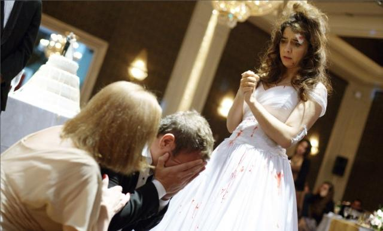
Relatos SalvajesSix short stories that explore the extremities of human behavior involving people in distress. |
||||
| Kiki's Delivery Service | Hayao Miyazaki | 1989 | Fantasy | |
|
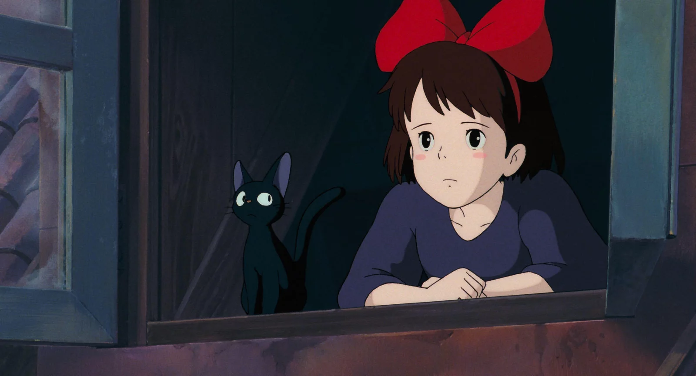
Kiki's Delivery ServiceA young witch, on her mandatory year of independent life, finds fitting into a new community difficult while she supports herself by running an air courier service. |
||||
| The Proposal | Anne Fletcher | 2009 | Comedy | |
|
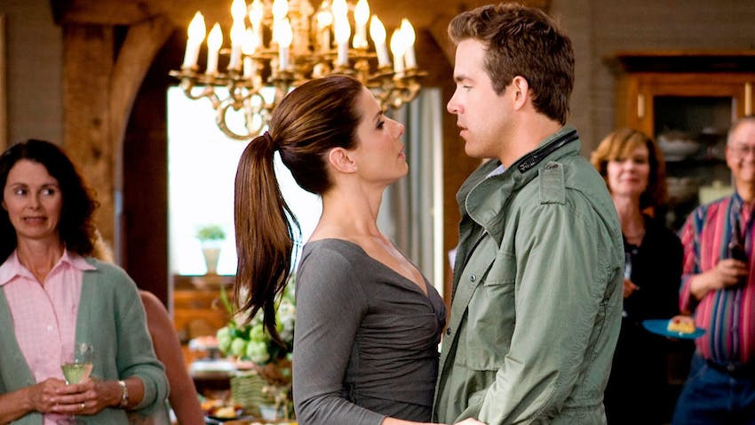
The ProposalWhen she learns she's in danger of losing her visa status and being deported, overbearing book editor Margaret Tate forces her put-upon assistant, Andrew Paxton, to marry her. |
||||
| Spider-Man 2 | Sam Raimi | 2004 | Action | |
|
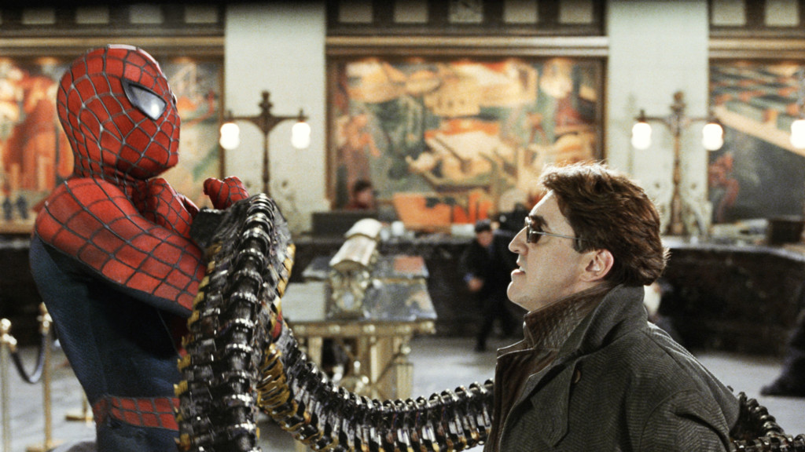
Spider-Man 2Peter Parker is going through a major identity crisis. Burned out from being Spider-Man, he decides to shelve his superhero alter ego, which leaves the city suffering in the wake of carnage left by the evil Doc Ock. In the meantime, Parker still can't act on his feelings for Mary Jane Watson, a girl he's loved since childhood. |
||||
| Mulan | Tony Bancroft, Barry Cook | 1998 | Adventure | |
|
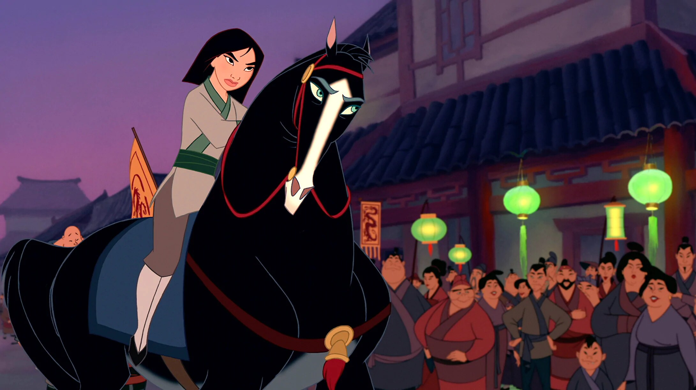
MulanLET'S GET DOWN TO BUSINESS, TO DEFEAT THE HUNSA tomboyish girl disguises herself as a young man so she can fight with the Imperial Chinese Army against the invading Huns. With help from wise-cracking dragon Mushu, Mulan just might save her country and win the heart of handsome Captain Li Shang. |
||||
| Clueless | Amy Heckerling | 1995 | Comedy | |
CluelessSEX. CLOTHES. POPULARITY. IS THERE A PROBLEM HERE?Shallow, rich and socially successful Cher is at the top of her Beverly Hills high school's pecking scale. Seeing herself as a matchmaker, Cher first coaxes two teachers into dating each other. Emboldened by her success, she decides to give hopelessly klutzy new student Tai a makeover. When Tai becomes more popular than she is, Cher realizes that her disapproving ex-stepbrother was right about how misguided she was and falls for him. |
||||
| Dog Day Afternoon | Sidney Lumet | 1975 | Drama | |
|
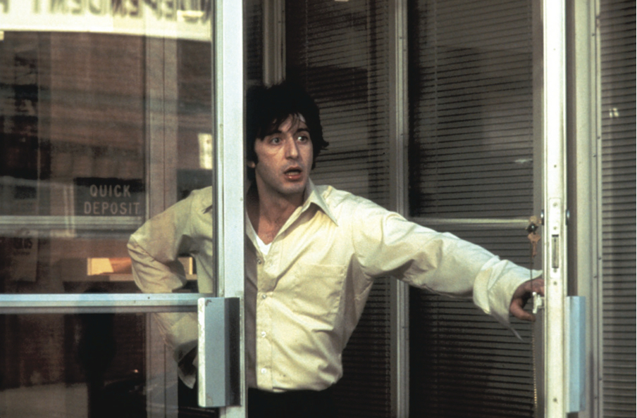
Dog Day AfternoonTHE MOST BIZARRE BANK SIEGE EVERBased on the true story of would-be Brooklyn bank robbers John Wojtowicz and Salvatore Naturale. Sonny and Sal attempt a bank heist which quickly turns sour and escalates into a hostage situation and stand-off with the police. As Sonny’s motives for the robbery are slowly revealed and things become more complicated, the heist turns into a media circus. |
||||
| X-Men: First Class | Matthew Vaughn | 2011 | Sci-Fi | |
X-Men: First ClassWITNESS THE MOMENT THAT WILL CHANGE OUR WORLDBefore Charles Xavier and Erik Lensherr took the names Professor X and Magneto, they were two young men discovering their powers for the first time. Before they were arch-enemies, they were closest of friends, working together with other mutants (some familiar, some new), to stop the greatest threat the world has ever known. |
||||
| The Rocky Horror Picture Show | Jim Sharman | 1975 | Sci-Fi | |
|
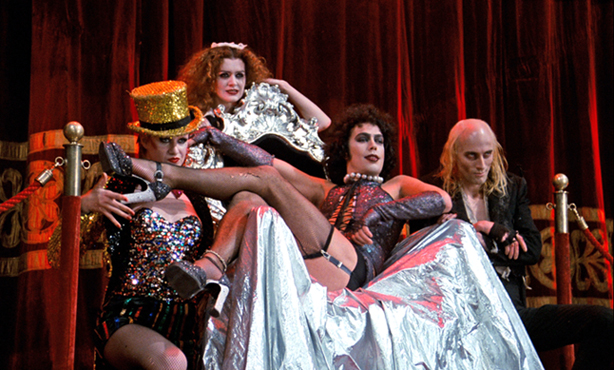
The Rocky Horror Picture ShowA DIFFERENT SET OF JAWSSweethearts Brad and Janet, stuck with a flat tire during a storm, discover the eerie mansion of Dr. Frank-N-Furter, a transvestite scientist. As their innocence is lost, Brad and Janet meet a houseful of wild characters, including a rocking biker and a creepy butler. Through elaborate dances and rock songs, Frank-N-Furter unveils his latest creation: a muscular man named 'Rocky'. |
||||
| The Favourite | Yorgos Lanthimos | 2018 | Drama | |
|
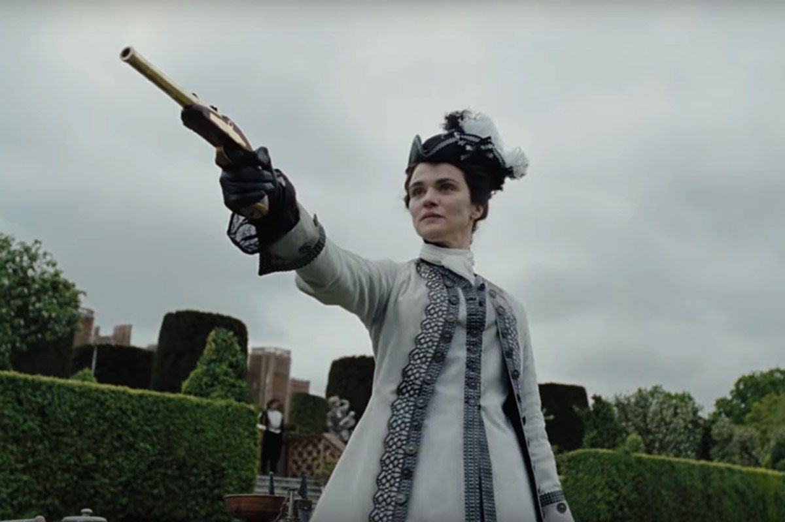
The FavouriteEngland, early 18th century. The close relationship between Queen Anne and Sarah Churchill is threatened by the arrival of Sarah's cousin, Abigail Hill, resulting in a bitter rivalry between the two cousins to be the Queen's favourite. |
||||
| Palm Springs | Max Barbakow | 2020 | Comedy | |
Palm SpringsWhen carefree Nyles and reluctant maid of honor Sarah have a chance encounter at a Palm Springs wedding, things get complicated as they are unable to escape the venue, themselves, or each other. |
||||
| Arrival | Denis Villeneuve | 2016 | Sci-Fi | |
ArrivalWHY ARE THEY HERE?Taking place after alien crafts land around the world, an expert linguist is recruited by the military to determine whether they come in peace or are a threat. |
||||
| Shaun of the Dead | Edgar Wright | 2004 | Comedy | |
|
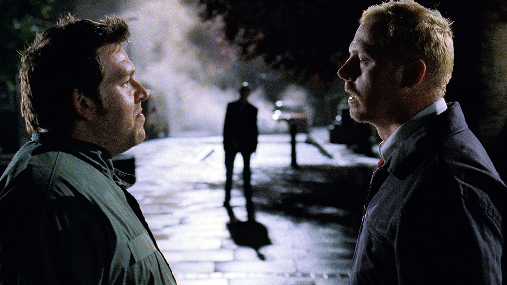
Shaun of the DeadA ROMANTIC COMEDY. WITH ZOMBIESShaun lives a supremely uneventful life, which revolves around his girlfriend, his mother, and, above all, his local pub. This gentle routine is threatened when the dead return to life and make strenuous attempts to snack on ordinary Londoners. |
||||
| Esperando la Carroza | Alejandro Doria | 1985 | Comedy | |
|
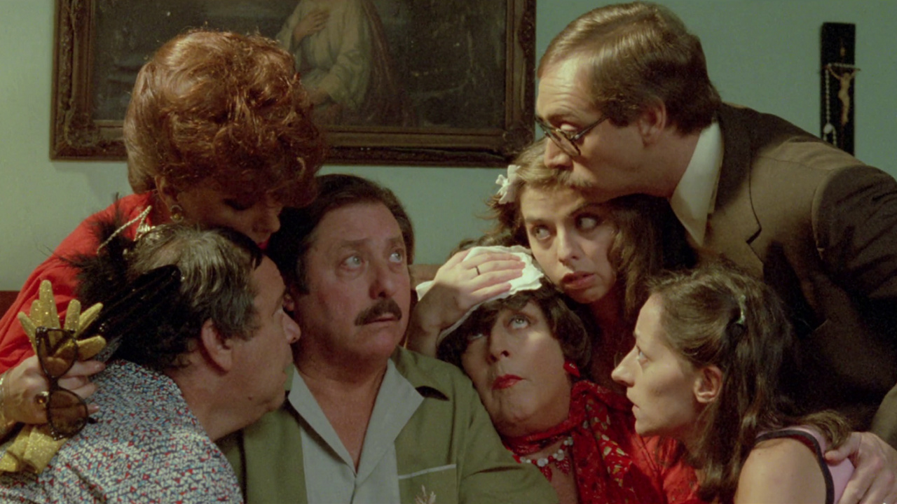
Esperando la CarrozaAN OUT OF THE ORDINARY WEEKEND IN THE LIFE OF AN ARGENTINE FAMILYMama Cora, who is almost eighty years old, has three sons and a daughter. She lives with one of them, who has serious financial problems. The family meets one day to celebrate an anniversary meal, and that is when the problem arises: which of them will take care of her? |
||||
| Howl's Moving Castle | Hayao Miyazaki | 2004 | Fantasy | |
|
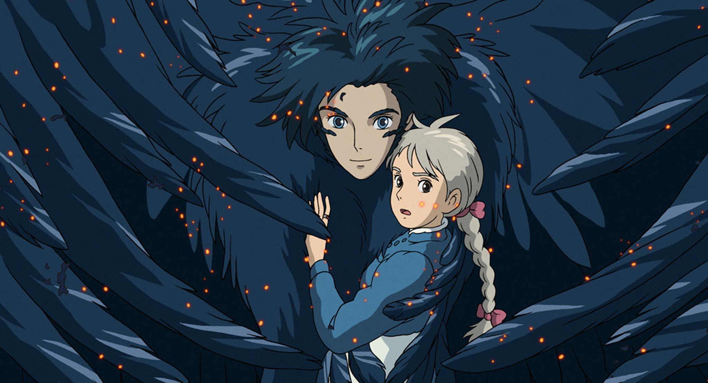
Howl's Moving CastleWhen Sophie, a shy young woman, is cursed with an old body by a spiteful witch, her only chance of breaking the spell lies with a self-indulgent yet insecure young wizard and his companions in his legged, walking castle. |
||||
| Treasure Planet | Ron Clements, John Musker | 2002 | Sci-Fi | |
|
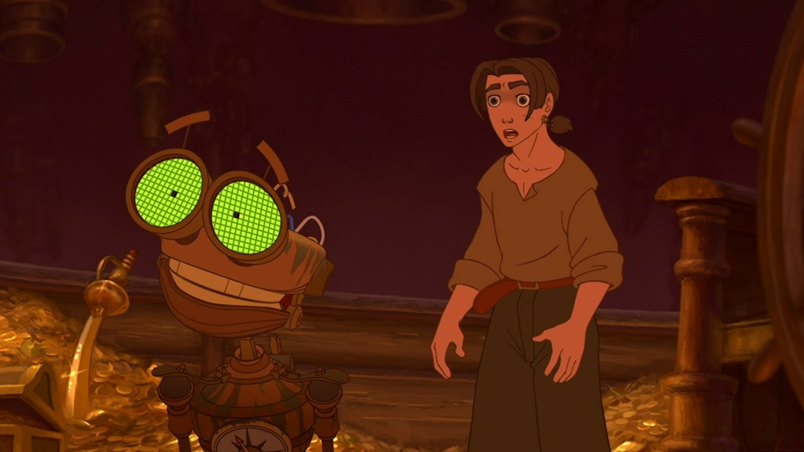
Treasure PlanetFIND YOUR PLACE IN THE UNIVERSEWhen space galleon cabin boy Jim Hawkins discovers a map to an intergalactic “loot of a thousand worlds,” a cyborg cook named John Silver teaches him to battle supernovas and space storms. But, soon, Jim realizes Silver is a pirate intent on mutiny! |
||||
| Prisoners | Denis Villeneuve | 2013 | Thriller | |
|
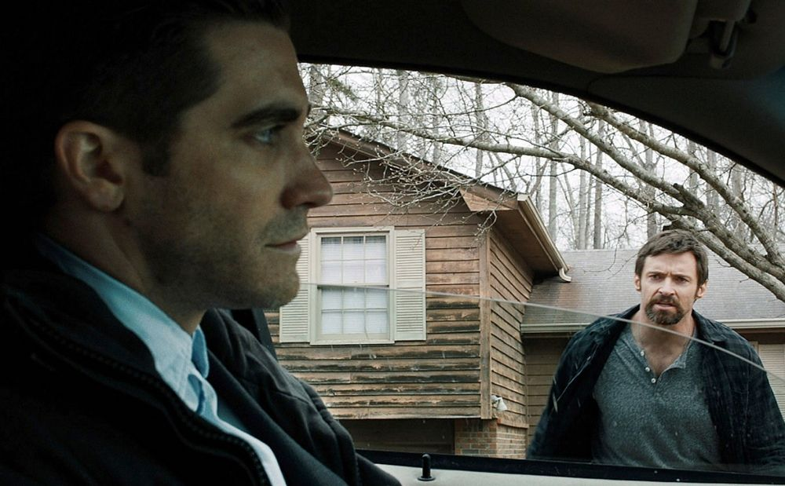
PrisonersWhen Keller Dover's daughter and her friend go missing, he takes matters into his own hands as the police pursue multiple leads and the pressure mounts. But just how far will this desperate father go to protect his family? |
||||
| Star Wars | George Lucas | 1977 | Sci-Fi | |
Star WarsA LONG TIME AGO IN A GALAXY FAR, FAR AWAY…Princess Leia is captured and held hostage by the evil Imperial forces in their effort to take over the galactic Empire. Venturesome Luke Skywalker and dashing captain Han Solo team together with the loveable robot duo R2-D2 and C-3PO to rescue the beautiful princess and restore peace and justice in the Empire. |
||||
| Mamma Mia! | Phyllida Lloyd | 2008 | Comedy | |

Mamma Mia!An independent, single mother who owns a small hotel on a Greek island is about to marry off the spirited young daughter she's raised alone. But, the daughter has secretly invited three of her mother's ex-lovers in the hopes of finding her biological father. |
||||
| Rope | Alfred Hitchcock | 1948 | Thriller | |

RopeTHE GUEST WHO'S DEAD ON TIMETwo men attempt to prove they committed the perfect crime by hosting a dinner party after strangling their former classmate to death. |
||||
| Singin' in the Rain | Stanley Donen, Gene Kelly | 1952 | Comedy | |
|
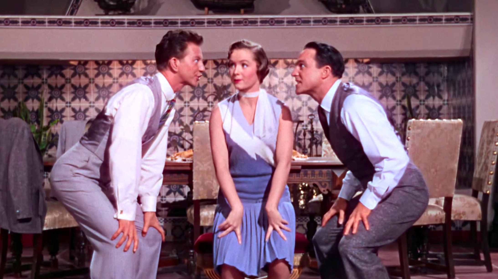
Singin' in the RainWHAT A GLORIOUS FEELING!In 1927 Hollywood, a silent film production company and cast make a difficult transition to sound. |
||||
| Clue | Jonathan Lynn | 1985 | Comedy | |

ClueSEVEN SUSPECTS, SIX WEAPONS, FIVE BODIES AND THREE ENDINGSClue finds six colorful dinner guests gathered at the mansion of their host, Mr. Boddy who turns up dead after his secret is exposed: He was blackmailing all of them. With the killer among them, the guests and Boddy's chatty butler must suss out the culprit before the body count rises. |
||||
| Harry Potter and the Prisoner of Azkaban | Alfonso Cuarón | 2004 | Fantasy | |
Harry Potter and the Prisoner of AzkabanHarry, Ron and Hermione return to Hogwarts for another magic-filled year. Harry comes face to face with danger yet again, this time in the form of escaped convict, Sirius Black—and turns to sympathetic Professor Lupin for help. |
||||
| The Princess Bride | Rob Reiner | 1987 | Fantasy | |
The Princess BrideMY NAME IS INIGO MONTOYA YOU KILLED MY FATHER PREPARE TO DIEIn this enchantingly cracked fairy tale, the beautiful Princess Buttercup and the dashing Westley must overcome staggering odds to find happiness amid six-fingered swordsmen, murderous princes, Sicilians and rodents of unusual size. But even death can't stop these true lovebirds from triumphing. |
||||
| Ed Wood | Tim Burton | 1994 | Drama | |
|
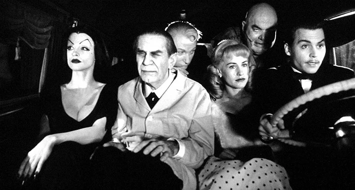
Ed WoodWHEN IT CAME TO MAKING BAD MOVIES, ED WOOD WAS THE BESTThe mostly true story of the legendary “worst director of all time”, who, with the help of his strange friends, filmed countless B-movies without ever becoming famous or successful. |
||||
| Jurassic Park | Steven Spielberg | 1993 | Sci-Fi | |
|
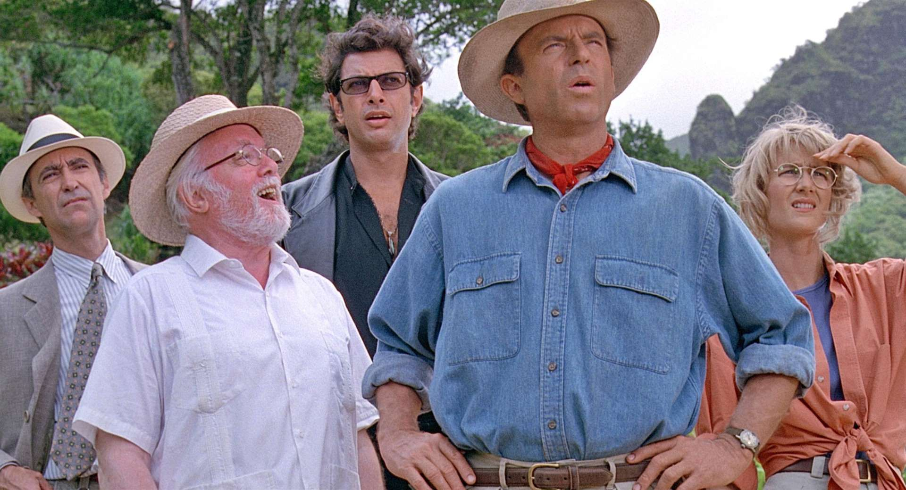
Jurassic ParkAN ADVENTURE 65 MILLION YEARS IN THE MAKINGA wealthy entrepreneur secretly creates a theme park featuring living dinosaurs drawn from prehistoric DNA. Before opening day, he invites a team of experts and his two eager grandchildren to experience the park and help calm anxious investors. However, the park is anything but amusing as the security systems go off-line and the dinosaurs escape. |
||||
| Deathtrap | Sidney Lumet | 1982 | Mystery | |
|
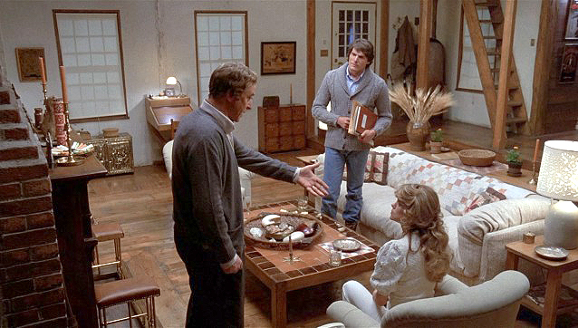
DeathtrapTHE TRAP IS SET… FOR A WICKEDLY FUNNY WHO'LL-DO-ITA Broadway playwright puts murder in his plan to take credit for a student's script. |
||||
| Frances Ha | Noah Baumbach | 2012 | Drama | |
Frances HaAn aspiring dancer moves to New York City and becomes caught up in a whirlwind of flighty fair-weather friends, diminishing fortunes and career setbacks. |
||||
| Shiva Baby | Emma Seligman | 2020 | Comedy | |
Shiva BabyDEATH, FAMILY STYLEA college student attends a family shiva where she is accosted by her relatives, outshined by her ex-girlfriend, and face-to-face with her sugar daddy and his family. |
||||
| The Terminal | Steven Spielberg | 2004 | Drama | |
|
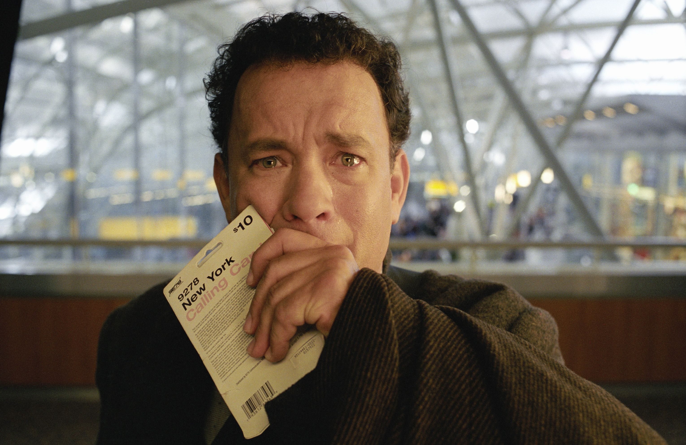
The TerminalViktor Navorski is a man without a country; his plane took off just as a coup d'etat exploded in his homeland, leaving it in shambles, and now he’s stranded at Kennedy Airport, where he’s holding a passport that nobody recognizes. While quarantined in the transit lounge until authorities can figure out what to do with him, Viktor simply goes on living and courts romance with a beautiful flight attendant. |
||||
| Big Fish | Tim Burton | 2003 | Drama | |
Big FishThroughout his life Edward Bloom has always been a man of big appetites, enormous passions and tall tales. In his later years, he remains a huge mystery to his son, William. Now, to get to know the real man, Will begins piecing together a true picture of his father from flashbacks of his amazing adventures. |
||||
| Spider-Man: Homecoming | Jon Watts | 2017 | Action | |

Spider-Man: HomecomingHOMEWORK CAN WAIT. THE CITY CAN'TFollowing the events of Captain America: Civil War, Peter Parker, with the help of his mentor Tony Stark, tries to balance his life as an ordinary high school student in Queens, New York City, with fighting crime as his superhero alter ego Spider-Man as a new threat, the Vulture, emerges. |
||||
| The Empire Strikes Back | Irvin Kershner | 1980 | Sci-Fi | |
The Empire Strikes BackTHE ADVENTURE CONTINUES…The epic saga continues as Luke Skywalker, in hopes of defeating the evil Galactic Empire, learns the ways of the Jedi from aging master Yoda. But Darth Vader is more determined than ever to capture Luke. Meanwhile, rebel leader Princess Leia, cocky Han Solo, Chewbacca, and droids C-3PO and R2-D2 are thrown into various stages of capture, betrayal and despair. |
||||
| The Devil Wears Prada | David Frankel | 2006 | Drama/Comedy | |
|
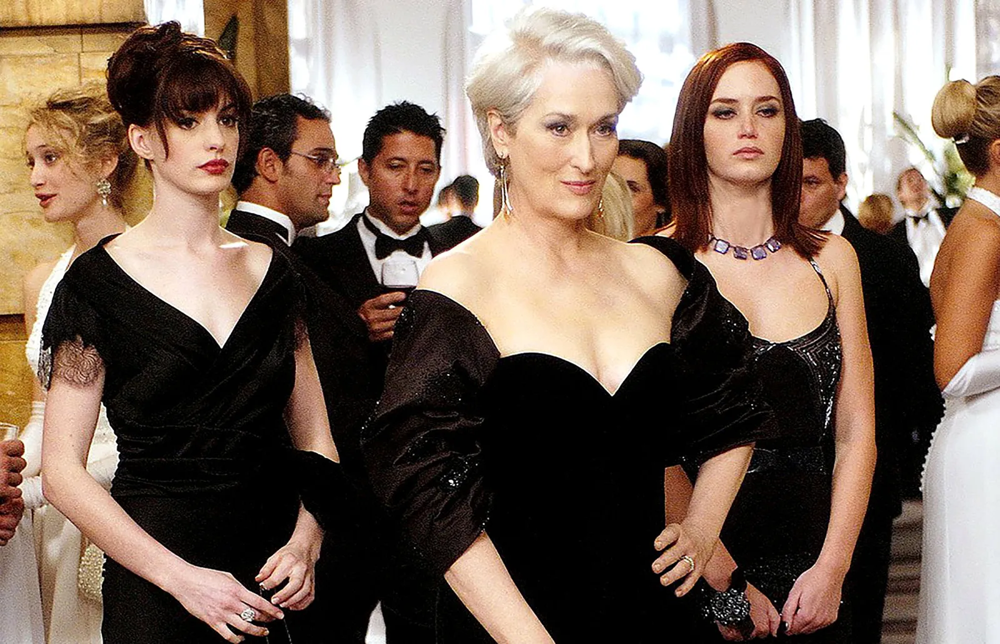
The Devil Wears PradaMEET ANDY SACHS. A MILLION GIRLS WOULD KILL TO HAVE HER JOB. SHE'S NOT ONE OF THEMAndy moves to New York to work in the fashion industry. Her boss is extremely demanding, cruel and won't let her succeed if she doesn't fit into the high class elegant look of their magazine. |
||||
| Knives Out | Rian Johnson | 2019 | Mystery | |
.avif)
Knives OutWhen renowned crime novelist Harlan Thrombey is found dead at his estate just after his 85th birthday, the inquisitive and debonair Detective Benoit Blanc is mysteriously enlisted to investigate. From Harlan's dysfunctional family to his devoted staff, Blanc sifts through a web of red herrings and self-serving lies to uncover the truth behind Harlan's untimely death. |
||||
| Baby Driver | Edgar Wright | 2017 | Action | |
Baby DriverALL YOU NEED IS ONE KILLER TRACKAfter being coerced into working for a crime boss, a young getaway driver finds himself taking part in a heist doomed to fail. |
||||
| Once Upon a Time… in Hollywood | Quentin Tarantino | 2019 | Drama | |
|
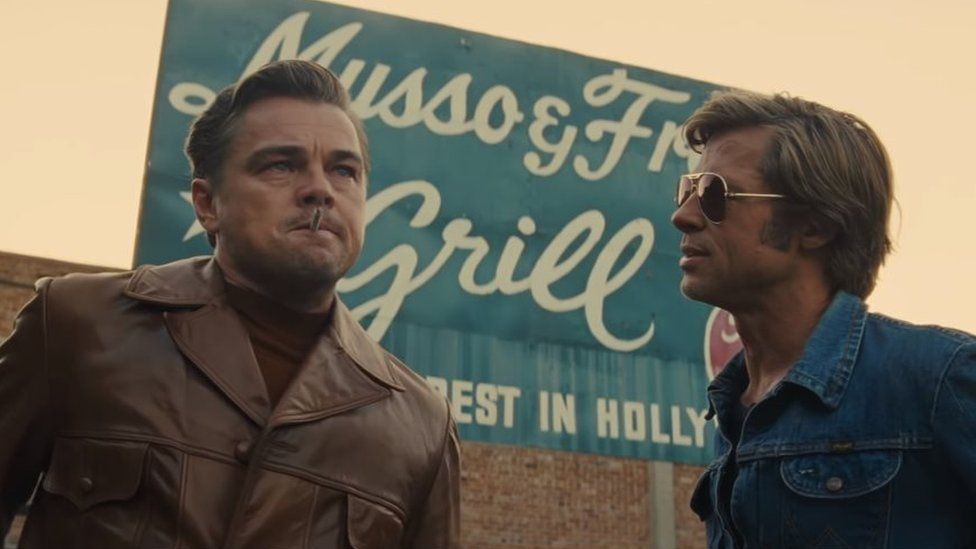
Once Upon a Time… in HollywoodIN THIS TOWN, IT CAN ALL CHANGE… LIKE THATLos Angeles, 1969. TV star Rick Dalton, a struggling actor specializing in westerns, and stuntman Cliff Booth, his best friend, try to survive in a constantly changing movie industry. Dalton is the neighbor of the young and promising actress and model Sharon Tate, who has just married the prestigious Polish director Roman Polanski… |
||||